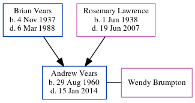

Andrew Philip Vears 1960 - 2014
[ Home ] | [ Calendar ] | [ Surnames Index ] | [ Census Index ] | [ Family History ]The child of Brian Vears and Rosemary Lawrence, Andrew Vears, the second cousin on the mother's side of Nigel Horne, was born in West Ham, London, England on Aug 29, 19601,2. He married Wendy Brumpton in Colchester, Essex, England around Nov 19883. About 2010, he was living at 43 Grange Lane, Gosport, Hampshire, England4.
He died on Jan 15, 2014 in Lee-On-The-Solent, Hampshire, England2.
Parents
- Brian Edward Walne was born on Nov 4, 1937
- Rosemary Irene Peggy was born on Jun 1, 1938
Citations
- England & Wales births 1837-2006 - Findmypast
- United Kingdom Deaths 2007-2017 - Findmypast
- England & Wales Marriages 1837-2005 - Findmypast
- UK, Electoral Registers, 2003-2010
Media
England & Wales births 1837-2006 - BMD/B/1960/3/AZ/001592/119
United Kingdom Deaths 2007-2017 - BMD/D/MILLEN/000099545
England & Wales marriages 1837-2005 - BMD/M/1988/10/85371762
Family Tree
Generated by ged2site. Last updated on Jun 11, 2024